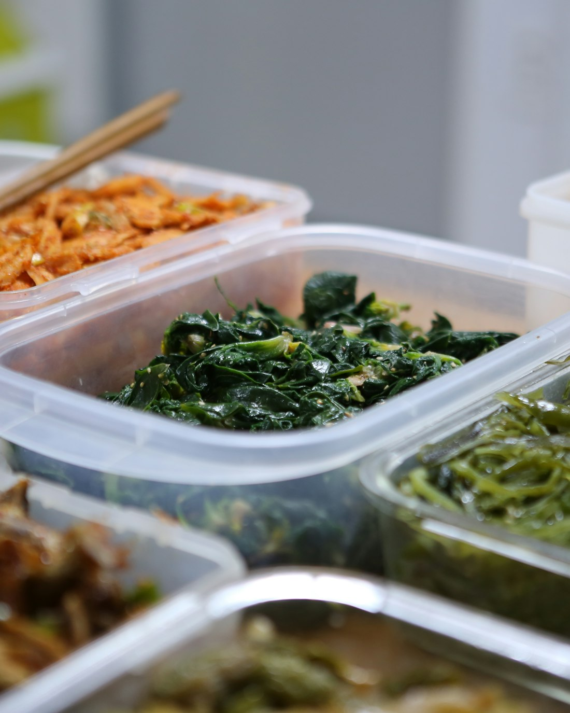

Sympathy and grief.
When someone is grieving, cooking is the last thing on their mind. A sympathy care package gives them a warm, homemade meal without having to ask for help.
When someone you love is going through something, food says what words can't. Send a care package of Colleen's homemade soups, a sweet treat, and a small gift, with a personal message from you.
Send a Care Package → [Prado link]

Video
[TODO: Colleen's explainer (Script 2) is not available yet. Embed it here before launch.]
At Homemade by Colleen, we believe food is one of the most meaningful ways to show someone you care. Our care packages are a simple, thoughtful way to be there for the people in your life: a neighbor who just lost a parent, a friend home with a newborn, a graduate who just finished something big. You pick the moment; we'll handle the cooking, the packing, and the delivery right here in Pittsburgh.
Everything arrives frozen with simple heating instructions, so they can enjoy it now or save it for a day they need it most.
When someone is grieving, cooking is the last thing on their mind. A sympathy care package gives them a warm, homemade meal without having to ask for help.
New parents are running on no sleep. Our postpartum care packages bring a nourishing, ready-to-heat meal straight to their freezer.
Not every care package is for a hard day. Celebrate a graduation, a new home, or a big milestone with a homemade gift they'll actually use.
Recovering from surgery or illness? Homemade soup is the original get-well gift.
Choose your care package and the occasion.
Write your message. We'll add it to the box.
We deliver on our regular Sunday and Wednesday routes across [Pittsburgh delivery area].
Looking for a meaningful way to support an employee through a loss, a new baby, or a hard season? Homemade by Colleen partners with local Pittsburgh businesses to send care packages on your company's behalf. [Contact us] to set up an account.
[Price] including delivery within our Pittsburgh delivery area.
We deliver every Sunday and Wednesday. Order by [cutoff day/time] for the next delivery.
Yes. Every care package includes a custom message written on the box.
[Confirm drop-off policy: e.g., we'll leave it in a cooler at the door and text you once it's delivered.]
Each package includes a heating instructions card. The soups can be thawed in the fridge overnight or warmed straight from frozen on the stovetop.
Yes. Every care package includes an ingredients and allergen card. [Note any common allergens, e.g., wheat in the noodles and cookie.]
Not yet. For now, care packages are local only. If your recipient lives outside our delivery area, a gift card is a lovely alternative.
The next time someone you love is going through something, send a little comfort to their door.
Send a Care Package → [Prado link]